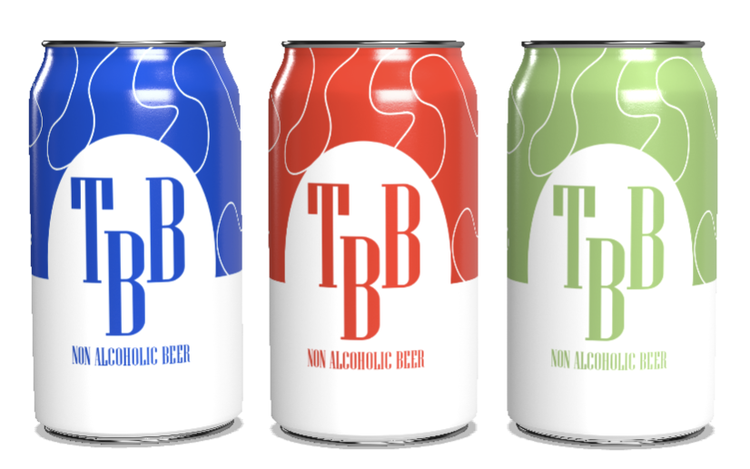

Om
TrøjborgBryg
I en baggård i Tordenskjoldsgade finder du TrøjborgBryg, som er et mikrobryggeri, der er dedikeret til at brygge øloplevelser udover det sædvanlige. Det, der gør TrøjborgBryg unikt, er vores passion for at skabe alkoholfri øl, der udover at overraske smagsløgene, opløfter sjælen.
Det hele startede med en vision om at bryde traditionerne indenfor ølbrygning og skabe noget udover det sædvanlige. Vi hos TrøjborgBryg mestrer kunsten at kombinere kvalitetsingredienser med nyskabende bryggemetoder, hvilket resulterer i en lang række forfriskende og velsmagende alkoholfrie øl, der hver og en er omhyggelig produceret af vores erfarne bryggere med respekt for naturen.
Vores sortiment omfatter alt fra lyse og mørke hvedeøl, til frugtagtige IPA'er og portere. Vi har alt til en hver smag. For os handler det om ikke bare at undlade en ingrediens; det handlet om at skabe en fuldendt og tilfredsstillende smagsoplevelse uden at kompromittere på kvaliteten.
TrøjborgBryg er mere end bare et mikrobryggeri; det er en destination for ølentusiaster og dem, der søger et alternativ og smagfuld drikkemulighed. Vores hyggelige atmosfære inviterer vores gæster til at udforske smagsløgene og dele unikke øjeblikke med vennerne, samtidig med at de nyder en sund og lækker alkoholfri øl.
Næste gang du er på udkig efter en unik øloplevelse, så tag et skridt ind i TrøjborgBrygs verden. Oplev smagen af flittigt håndværk og dedikation i hvert slurk, og lad os vise dig, at alkoholfri øl kan være lige så spændende som den alkeholdige modpart. Skål for TrøjborgBryg!